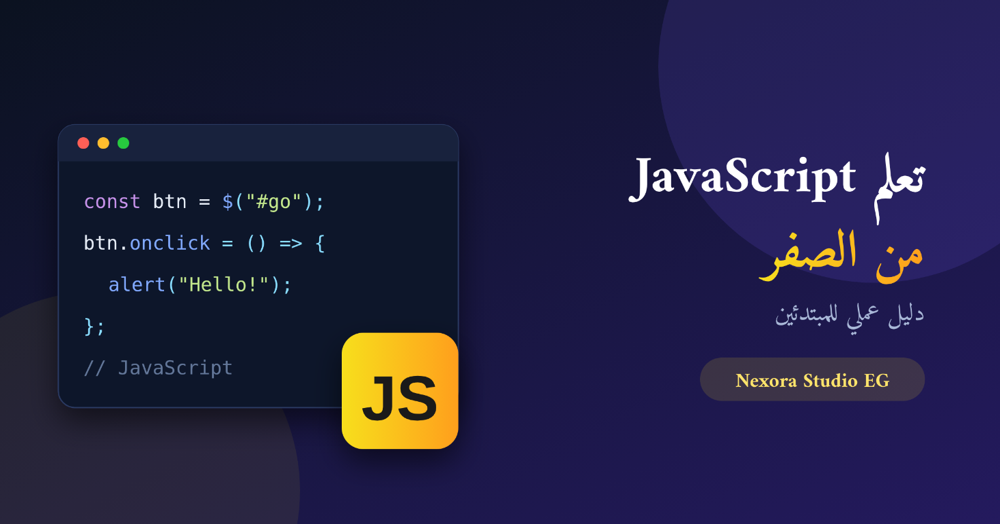
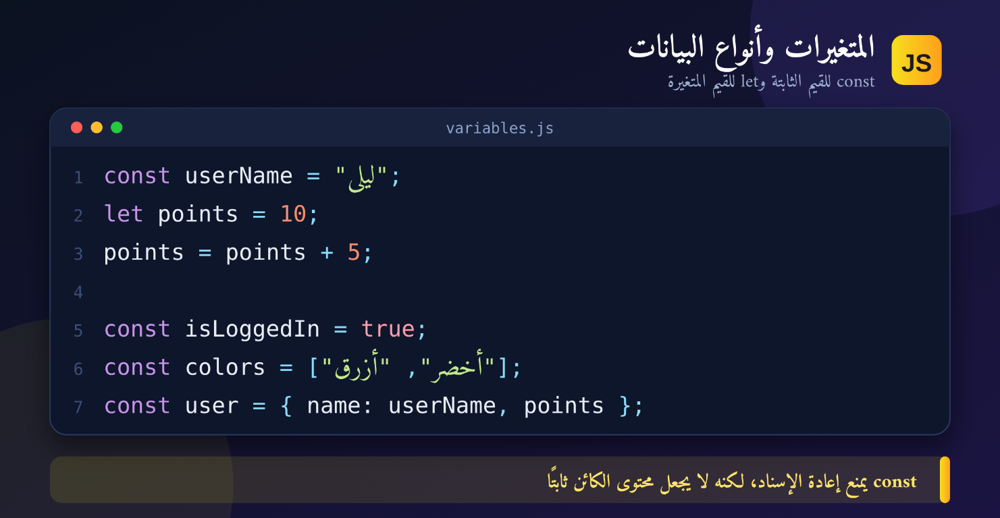
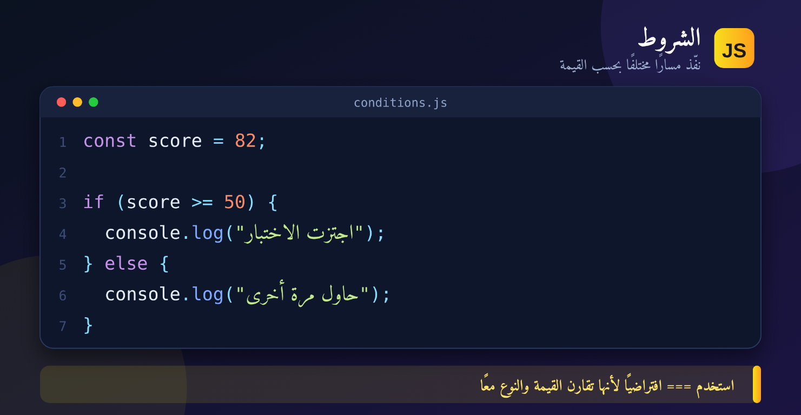
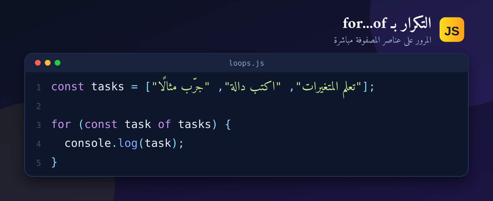
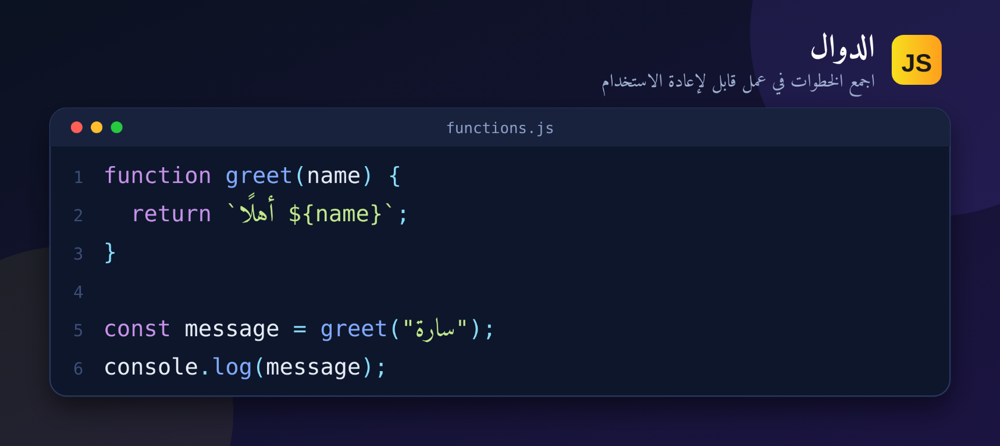
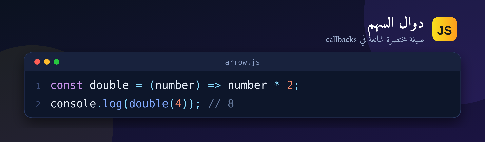
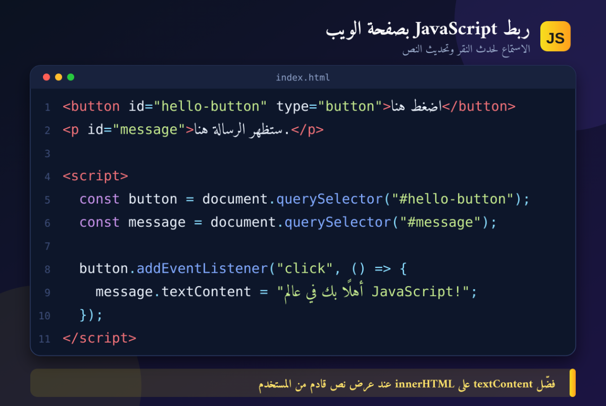
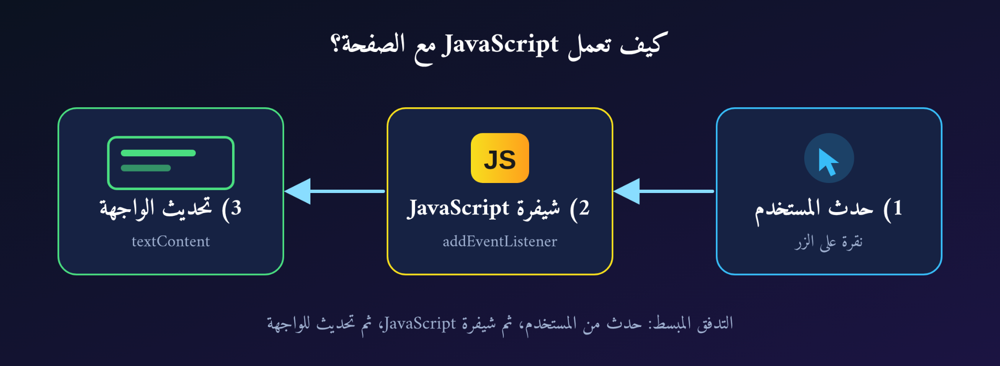
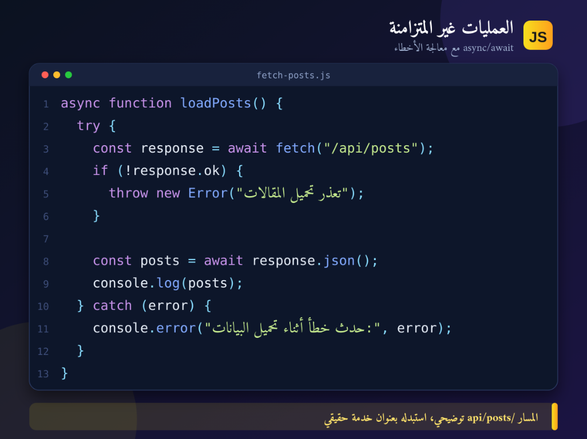

إذا سبق أن فتحت موقعًا وظهرت لك قائمة تتفاعل مع النقر، أو نموذج يتحقق من البيانات، أو نتائج تتحدث دون إعادة تحميل الصفحة، فغالبًا هناك JavaScript تعمل في الخلفية. في هذا الدليل سنبني فهمًا عمليًا للمفاهيم الأساسية، من دون افتراض خبرة سابقة في البرمجة.
ما JavaScript؟ وهل هي نفسها Java؟
JavaScript لغة برمجة متعددة الاستخدامات، وتُستخدم في المتصفح لإضافة السلوك إلى صفحات الويب. فـ HTML يحدد محتوى الصفحة وبنيتها، وCSS ينسق مظهرها، بينما تستطيع JavaScript الاستجابة للأحداث وتحديث المحتوى والتواصل مع خدمات الويب. ويمكن تشغيلها أيضًا خارج المتصفح، مثلًا عبر بيئة Node.js.
JavaScript ليست Java؛ الاسمان متشابهان لكنهما لغتان مختلفتان. ومن المفيد أيضًا التمييز بين اللغة نفسها وواجهات المتصفح: فالـ DOM، مثلًا، واجهة تتيح للكود التعامل مع عناصر صفحة HTML، وليست جزءًا من صياغة اللغة الأساسية.
المتغيرات وأنواع البيانات
المتغير اسم لقيمة تحتاج إلى استخدامها لاحقًا. استخدم const عندما لن تعيد إسناد قيمة جديدة إلى المتغير، وlet عندما تحتاج فعلًا إلى إعادة الإسناد. تجنب var في الشيفرة الجديدة إلا عند التعامل مع كود قديم.

من الأنواع الشائعة: النصوص مثل "مرحبا"، والأرقام، والقيم المنطقية true وfalse، والقيمة غير المعرّفة undefined، والقيمة الفارغة المقصودة null، إضافة إلى الكائنات والمصفوفات. لاحظ أن const يمنع إعادة إسناد المتغير، لكنه لا يجعل محتويات كائن أو مصفوفة ثابتة تلقائيًا.
الشروط والمقارنة والتكرار
تسمح الشروط بتنفيذ مسار مختلف بحسب قيمة ما. استخدم المقارنة الصارمة === افتراضيًا، لأنها تقارن القيمة ونوعها معًا، بدل الاعتماد على تحويل الأنواع الضمني.

وعندما تريد المرور على مجموعة من العناصر، استخدم حلقة مناسبة. مثلًا، يمر for...of على قيم المصفوفة مباشرة:

for...of.الدوال: اجمع الخطوات في عمل قابل لإعادة الاستخدام
الدالة كتلة منطقية تنفذ مهمة، وقد تستقبل مدخلات وتعيد نتيجة. تسمية الوظيفة ومدخلاتها بوضوح تجعل الكود أسهل في القراءة والاختبار.

يمكن كتابة الدوال أيضًا بصيغة السهم، وهي شائعة في callbacks:

ربط JavaScript بصفحة الويب
هذا مثال صغير: نبحث عن الزر والنص باستخدام querySelector، ثم نضيف مستمعًا لحدث النقر. عند النقر، تتغير رسالة الصفحة باستخدام textContent.

جرّب تغيير نص الزر أو الرسالة. وعند إدراج نص يأتي من المستخدم، فضّل textContent على innerHTML ما لم تكن بحاجة فعلية إلى تفسير HTML؛ فالتعامل الآمن مع المدخلات مهم لتجنب إدخال محتوى غير موثوق في الصفحة.

التعامل مع البيانات والعمليات غير المتزامنة
تسمح المصفوفات بحفظ قائمة قيم، والكائنات بجمع خصائص مرتبطة بشيء واحد. كما تُستخدم الدوال المساعدة مثل map وfilter لإنشاء قائمة جديدة أو اختيار عناصر تحقق شرطًا معينًا.
قد تحتاج صفحتك إلى طلب بيانات من خادم. هذا الطلب غير متزامن؛ لذلك تستخدم JavaScript الوعود وasync/await لكتابة الكود بطريقة واضحة، مع الانتباه إلى معالجة الأخطاء والتحقق من نتيجة الاستجابة.

المسار /api/posts في المثال توضيحي، ويجب استبداله بعنوان خدمة حقيقي. تذكّر أن نجاح طلب الشبكة لا يعني بالضرورة أن الخادم أعاد حالة نجاح؛ لذلك نفحص response.ok أيضًا.
كيف تتعلم JavaScript بطريقة عملية؟
- تأكد من فهم أساسيات HTML وCSS؛ ليس مطلوبًا إتقانهما قبل البدء، لكنهما يساعدانك على رؤية أثر JavaScript في الصفحة.
- تعلم موضوعًا واحدًا في كل مرة: المتغيرات، أنواع البيانات، الشروط، الدوال، المصفوفات، ثم DOM والأحداث.
- اكتب الأمثلة بنفسك، ثم غيّرها عمدًا ولاحظ ما يتغير. القراءة وحدها لا تكفي لترسيخ المفاهيم.
- ابنِ مشاريع صغيرة مثل عداد، قائمة مهام، أو نموذج يتحقق من مدخلات المستخدم.
- افتح أدوات المطور في المتصفح واقرأ رسائل وحدة التحكم. الخطأ جزء طبيعي من التعلم، ورسالة الخطأ غالبًا بداية جيدة للبحث.
- بعد الأساسيات، انتقل إلى الوحدات Modules، والوعود Promises، وواجهات الويب، ثم اختر إطار عمل حسب احتياج مشروعك.
شاهد دورة JavaScript داخل المقال
يمكنك تشغيل قائمة دورة Learn JavaScript in Arabic 2021 من Elzero Web School مباشرةً هنا، والتنقل بين دروسها من مشغّل YouTube دون مغادرة المقال.
إذا لم يظهر المشغّل أو منعت إعدادات المتصفح تشغيله، افتح دورة JavaScript مباشرةً على YouTube. قد يعتمد التشغيل المضمّن على اتصال الإنترنت وتوفر الفيديو وإعدادات الخصوصية في المتصفح.
مصادر عربية وروابط فيديو للتعلم
هذه مصادر إضافية للمذاكرة والتطبيق. ترتيبها مقترح وليس شرطًا؛ اختر مصدرًا واحدًا للبدء واكتب الكود بالتوازي بدل التنقل بين دورات كثيرة.
- JavaScript.info بالعربية — كتاب تعليمي متدرج يبدأ من الأساسيات ويتوسع إلى موضوعات اللغة المتقدمة.
- أكاديمية حسوب: مقالات جافاسكربت — دروس عربية ومقالات عن JavaScript وما يرتبط بها من تقنيات.
- دليل MDN للمبتدئين — مسار رسمي موثوق لتعلم البرمجة النصية في الويب؛ هذه الصفحة متاحة بالإنجليزية.
- دورة Learn JavaScript in Arabic 2021 — Elzero Web School — قائمة تشغيل محددة للدورة، ويمكن فتحها مباشرة على YouTube عند الحاجة.
الخلاصة
JavaScript تمنح صفحات الويب القدرة على الاستجابة والتفاعل، وتبدأ رحلتك بفهم القيم والمتغيرات والشروط والدوال، ثم تطبيق هذه المفاهيم على عناصر الصفحة والأحداث والبيانات. خذ كل فكرة إلى مثال صغير، وافحص النتيجة في المتصفح، وارجع إلى المصادر الموثوقة كلما احتجت إلى توضيح.